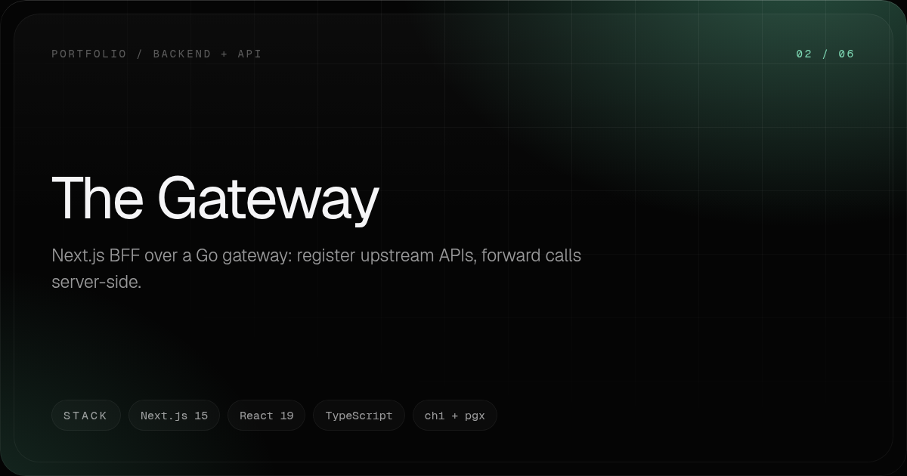
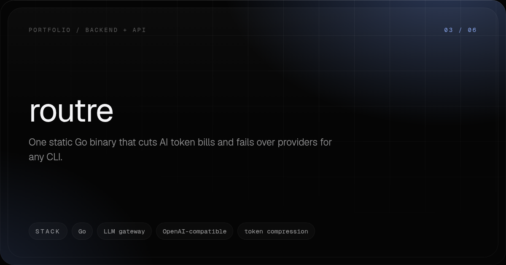
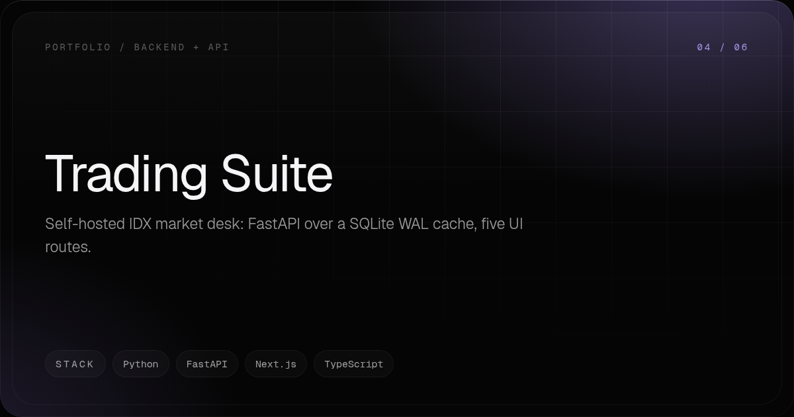
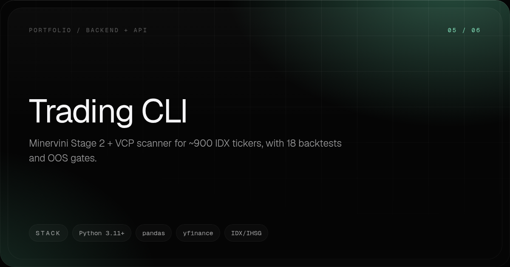
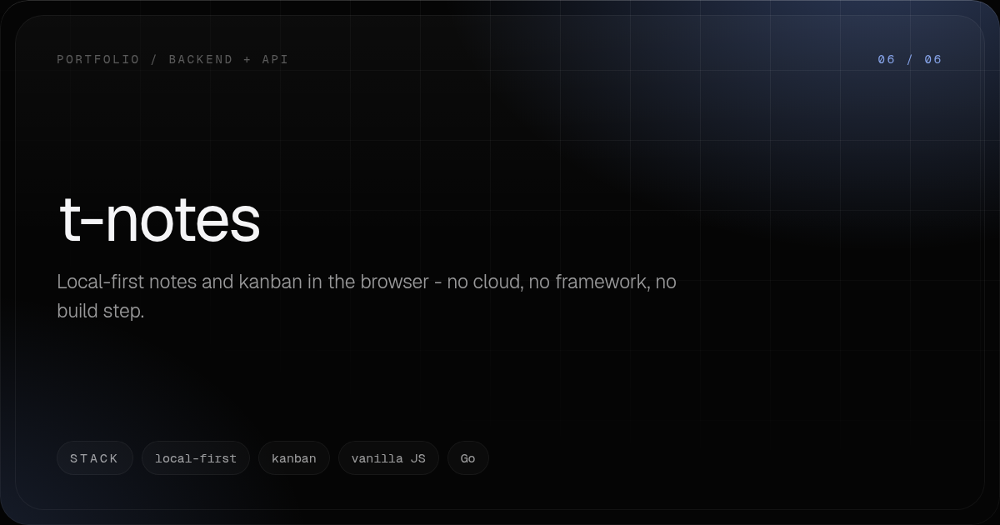

Every value on these pages is quoted from the repository's own README, tests or
config. Where the README publishes nothing, this page says so.

Payment System
01
Backend Engineer & System Architect
Designed and built a production-style payment platform using Go, PostgreSQL, Redis, Docker Compose, and Next.js. The system supports order creation, payment charging, HMAC-secured callbacks, refunds, invoice generation, and transaction logs. Implemented idempotency protection, authorization, transactional outbox processing, retries, dead-letter queues, and background workers for reliable asynchronous workflows.
Repogithub.com/mariobgsp/payment-system
Deliverables
- Payment lifecycle API
- Idempotency protection
- HMAC callback verification
- Transactional outbox and DLQ
- Invoice background worker

The Gateway
02
Backend Engineer & API Architect
Built an API gateway platform with a Next.js 15 Backend-for-Frontend layer in front of a Go gateway service and PostgreSQL. The BFF proxies requests server-side, applying auth, timeouts and envelope mapping, and never exposes JWTs to browser JavaScript. The Go gateway implements JWT authentication, rate limiting, API and store services, and forwarding to configured upstream APIs, shipped with Kubernetes manifests.
Repogithub.com/mariobgsp/the-gateway
Deliverables
- Next.js BFF proxy layer
- Go gateway service
- httpOnly cookie session auth
- JWT auth with rate limiting
- Kubernetes deployment manifests

routre
03
Go Backend Engineer & Systems Developer
Developed a lightweight local LLM gateway for coding agents using Go. The gateway provides a unified interface for multiple providers, automatic failover, model-list refresh, response caching, token compression, and per-agent token and cost tracking. Designed as a low-memory static binary with no external runtime dependencies, improving reliability and visibility for local AI-assisted development workflows.
Repogithub.com/mariobgsp/routre
Deliverables
- Unified LLM provider interface
- Automatic provider failover
- Response caching
- Token and cost ledger
- Lightweight static binary

Trading Suite
04
Backend Engineer & Quantitative Software Developer
Built a financial data platform using Python and FastAPI for Indonesian stock market analysis. The platform includes live quotes, multi-ticker screening, technical indicators, bandarmology validation, FIFO portfolio tracking, market-regime filtering, historical backtesting, and AI-generated market summaries. Designed data-processing workflows and API endpoints for market analysis, portfolio calculations, and reproducible trading research.
Repogithub.com/mariobgsp/trading-suite
Deliverables
- FastAPI backend
- Live quote integration
- Stock screening engine
- FIFO portfolio tracking
- Backtesting workflows

Trading CLI
05
Python Developer & Quantitative Research Engineer
Created a Python command-line stock screening tool for Indonesian and IHSG markets. The application detects Stage 2 trends, volatility contraction patterns, pullbacks, breakouts, and reversals. It also includes technical indicators, institutional-flow analysis, market-regime filters, multiple backtesting strategies, and walk-forward out-of-sample evaluation for more disciplined and reproducible analysis.
Repogithub.com/mariobgsp/trading-cli
Deliverables
- Technical stock scanner
- Breakout and pullback detection
- Market-regime filter
- Backtesting strategies
- Walk-forward evaluation

t-notes
06
Full-Stack Engineer & Application Architect
Built a local-first notes and Kanban application focused on privacy, offline use, and low resource consumption. The application provides note management, task organization, and board-based workflows without requiring a cloud account. Implemented local persistence, a responsive interface, and desktop packaging with Tauri for users who want full control of their data.
Repogithub.com/mariobgsp/t-notes
Deliverables
- Notes management
- Kanban board workflow
- Offline data persistence
- Responsive user interface
- Desktop application package

arness
07
TypeScript Engineer & Developer-Tooling Developer
Built a lean local AI coding harness in TypeScript: a single binary with an interactive TUI and a print mode over one turn loop. It ships tools (bash, filesystem, search), an extension API, MCP and LSP capabilities, skills, subagents and memory, plus a token optimizer that orders prefixes, compresses, clamps, prunes and writes a savings ledger. Sessions are plain JSONL event logs and the test suite runs on node --test against committed SSE captures with no network access.
Repogithub.com/mariobgsp/arness
Deliverables
- Single-binary CLI + TUI
- Turn loop with tools and skills
- Extension API with hooks
- MCP and LSP capabilities
- Optimizer with savings ledger